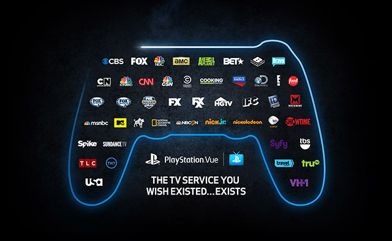

Nowadays most people prefer watching movies online because of its affordability and convenience. Users have a wide range of movies to choose from including latest and classical movies. Examples of websites that offer online movie streaming is Netflix and PlayStation Vue
| PlayStation Vue | Netflix |
|  | |
Click on image to enlarge |
|
There are several ways of watching movies online. One way is by renting the movie that you want to watch. Others include watching the movie at that instant or downloading it onto your hard disk. The renting method is inexpensive but you cannot keep the movie forever. Watching the movie at that instant can be inconvenient; you may need to attend an urgent task which requires you to stop watching the movie. Downloading it onto your hard disk may require you to have a high speed internet connection, but you get the benefit of keeping the movie forever. Apart from watching movies, you can also get access to latest movie trailers, movie reviews and fan pages of popular actors.
{kind=link}
{kind=link}